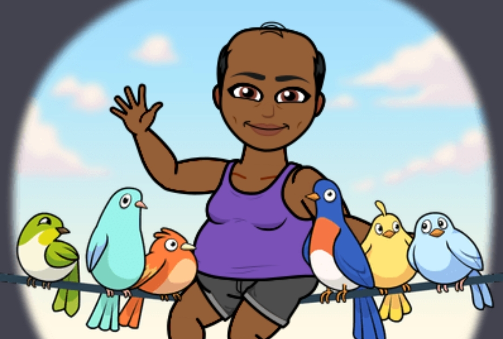

Thanks for stopping by!
My name is Azania Baker-Garcia (also known as "Z").
After passing the California bar in 2015 and practicing law for a few years,
I decided to enroll in Thinkful's Flex-Engineer program.
I received a graduate certificate from Thinkful in 2020, and have
built projects in a variety of languages including JavaScript, React, and Python.
I'm excited to collaborate with others to create applications and services
that will uplift my community and make the world a more evolved place.
GitHub: